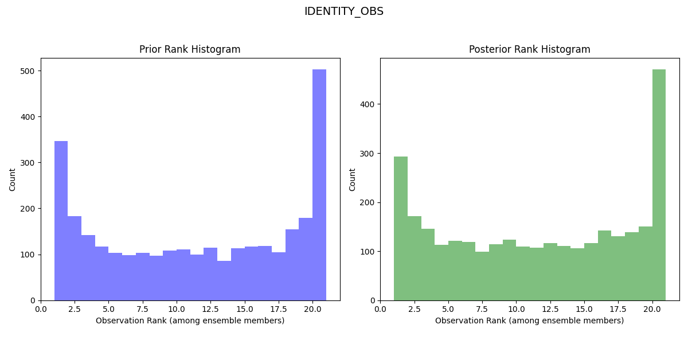

An example of using pyDARTdiags with DART and the Lorenz 63 model#
This page will demonstrate how to use pyDARTdiags to enhance your data assimilation projects with DART by showing you how to manipulate DART observation sequences and analyze DART results.
We assume you have downloaded and built DART and successfully run the Lorenz 63 model.
In this guide, we’ll step through:
Using pyDARTdiags to change the observations input to DART’s filter program
Using pyDARTdiags to plot rank histograms of the DART Lorenz 63 obs_seq.final files, both for the original run of filter and for the run with the modified observations
Manipulating Observation Sequences with pyDARTdiags#
This section focuses on how pyDARTdiags fits into a DART workflow, guiding you through the process of running a Python program in an interactive session thats uses pyDARTdiags functions to read in the observation sequence file, modify the observation error variances, and write out a new observation sequence file with the altered data.
You will be working through the examples in this guide in the Lorenz 63 model working directory.
Navigate to your DART installation directory and then to the DART/models/lorenz_63/work
directory in your terminal.
First, ensure you have pyDARTdiags installed in your Python environment. If you haven’t installed it yet, follow the instructions in the Install Guide.
Start an interactive Python session by entering the command python or python3
in your terminal.
Enter the following lines of code one by one. You can copy and paste them from below.
Import the necessary modules.
import pydartdiags.obs_sequence.obs_sequence as obsq
Specify the name of the observation sequence file to be read. This will be the Lorenz 63
obs_seq.outfile that is included in DART and is already located in your current working directory.file_name = "obs_seq.out"
Read the obs_seq file into an obs_seq object.
obs_seq = obsq.ObsSequence(file_name)
Halve the observation error variances.
obs_seq.df['obs_err_var'] = obs_seq.df['obs_err_var'] / 2.0
Create a new file name for the modified observation sequence.
output_file = file_name + ".half_error_variance"
Write out the modified observation sequence to a new file.
obs_seq.write_obs_seq(output_file)
Exit the interactive session.
exit()
A new observation sequence file with the modified error variances should be saved in your
current directory. The new file will have be the name of the observation sequence file you
specified with .half_error_variance appended to the end.
You can now use this new observation sequence file as input to a new DART data assimilation
experiment with Lorenz 63. Ensure you have made the necessary changes to the &filter_nml
section of the DART input.nml namelist file to point the obs_sequence_in_name namelist item
to this new input observation sequence file and give a corresponding name for the output
observation sequence file (i.e obs_seq.final.half_error_variance) in the obs_sequence_out_name
item. Rerun the filter program.
Analyzing DART Results with pyDARTdiags#
You have now completed two DART data assimilation experiments, each producing an
final observation sequence file, or obs_seq.final. This file contains the actual
observations as assimilated as well as the ensemble forward-operator expected values
and any quality-control values.
You can now use the pyDARTdiags library to read in and analyze the observation space results of your DART assimilation experiment. In this example, we’ll plot the Rank Histogram of the DART Lorenz 63 obs_seq.final files.
The observation sequence files you created for Lorenz 63 contain only identity observations. You can read about identity observations in this section of the pyDARTdiags documentation.
Identity observations do not get listed in the header of the observation sequence file; they are instead given a special value for the observation type (kind) in the observation sequence to indicate that they are identity observations. They are denoted in a given observation by an observation type of -x where x is the index in the DART state vector that the observation corresponds to.
In the ObsSequence DataFrame, the type of identity observations is stored as this negative integer
of the index in the DART state vector. Therefore, when writing the program to plot the rank
histograms, you will specify the observation type as IDENTITY_OBS.
Start an interactive Python session by entering the command python or python3
in your terminal.
Enter the following lines of code one by one. You can copy and paste them from below.
Import the obs_sequence module.
import pydartdiags.obs_sequence.obs_sequence as obsq
Import the matplots module.
import pydartdiags.matplots.matplots as mp
Specify the path to and name of the final observation sequence file from your first DART data assimilation experiment.
file_name = "obs_seq.final"
Specify the path to and name of the final observation sequence file from your second DART data assimilation experiment.
file_name2 = "obs_seq.final.half_error_variance"
Read the first observation sequence file into an obs_seq object.
obs_seq = obsq.ObsSequence(file_name)
Read the second observation sequence file into an obs_seq object.
obs_seq_half_ev = obsq.ObsSequence(file_name2)
Choose an observation type to plot on the rank histograms.
obs_type = "IDENTITY_OBS"
Set the ensemble size used in your DART experiments. For the Lorenz 63 model, the default ensemble size is 20.
ens_size = 20
Plot the rank histograms for the first obs_seq.final. The dataframe has prior and posterior information so both the prior and posterior rank histograms are plotted.
Once plotted, save the figure and close it.
fig = mp.plot_rank_histogram(obs_seq, obs_type, ens_size)
Plot the rank histograms for the second obs_seq.final with halved error variance.
Once plotted, save the figure and close it.
fig2 = mp.plot_rank_histogram(obs_seq_half_ev, obs_type, ens_size)
Exit the interactive session.
exit()
You should now have rank histogram plots for both experiments and can now compare the two to see how the change in observation error variances affected the results of your data assimilation experiments. Look for differences in the shape of the histograms, which supply information on the model bias. The results should look like similar to the images below.
Rank Histogram for First Lorenz 63 Experiment:

Rank Histogram for Second Lorenz 63 Experiment with Halved Error Variance:
{kind=link}
The rank histogram for the initial experiment should be generally flatter and more evenly spread across the ranks, indicating a more reliable forecast (the observed distribution is well represented by the ensemble and all ensemble members represent equally likely scenarios).
By following this workflow, you have learned how pyDARTdiags can be easily integrated into your DART data assimilation experiments, allowing you to effectively manipulate observation sequences and analyze assimilation results. Please refer to the User Guide and Examples sections of the documentation for more detailed information and additional examples of using pyDARTdiags.